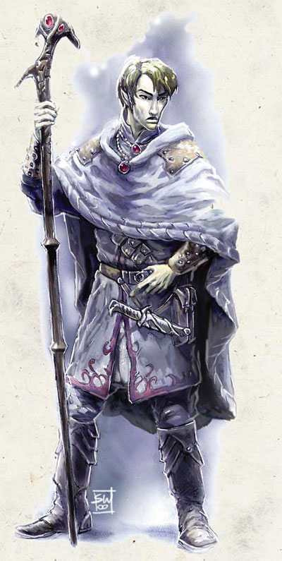

有些施法者在莎儿女神 Shar的指引下或在自行研究时发现阴影魔法网络 Shadow Weave的存在，这些施法者中有的人极小心地慢慢引导阴影魔法网络的能量来改变自己法术的成分；不过，也有缺乏耐性的施法者莽撞的把自己投进阴影魔法网络漩涡之中。这些肯冒险把自己奉献给阴影魔法网络的施法者会发现他们得到了大量的好处与许多原本不为人知的秘密。这些施法者就是阴影法师，他们牺牲了一部分原本的法术造诣来换取更大的好处。
大部分的阴影法师都是法师与术士，他们透过阴影魔法网络得到了巨大的力量。但是，由于阴影魔法网络以提供任何类型的施法者所需的能量，因此据说有一些吟游诗人、德鲁依与游侠已经投入了阴影魔法网络的怀抱。大部分选择成为阴影法师的牧师都是莎儿的信徒。
生命骰：d4
职业需求：
阵营：任何非善良
施法能力：能施放3级的秘术或神术
技能：神秘知识 Arcane Knowledge 8级，法术辨识 Spellcraft 8级
专长：阴影魔法网络法术 Shadow Weave Magic与任一超魔法专长
职业技能：
以敏捷为关键属性者：骑术 Hide
以体质为关键属性者：集中 Concentration
以智力为关键属性者：手艺 Craft、知识 Knowledge（每一子项分别计算）、占卜 Scry、法术辨识 Spellcraft
以智慧为关键属性者：专业 Profession
以魅力为关键属性者：欺骗 Bluff、易容 Disguise
每级技能点数：2+智力调整值
职业特色：
施法者等级 Spell per day：
一位阴影法师会继续他原来的施法训练，因此当他得到新的阴影法师等级时，他原基础职业的施法者等级也会上升，不过他不会得到原基础职业升级后的奖励（比如每日超渡不死生物的次数、奖励超魔法专长或物品制造专长等）。换句话说，他可以把阴影法师职业等级与原施法职业的施法者等级迭加。
如果他拥有不只一个的基础施法职业，他再每次升级时可以自由选择要加到哪一个上。
阴影魔法专长 Shadow Feat：
第1级时，阴影法师自动得到以下3个专长－－狡诈法术 Insidious Magic、恶毒法术 Pernicious Magic、强韧法术 Tenacious Magic〔注：文末另行介绍〕。
低光视力 Low-Light Vision〔超自然能力〕：
如果阴影法师本身没有低光视力，那他在第2级时可以获得此能力。
阴影魔法抗性 Shadow Defense：
在第2级时，当影魔法专家在抵抗所有死灵系、附魔系、幻术系与任何含有黑暗特性的法术时，其豁免检定都得到+1奖励。此奖励在第5级与第8级时都再+1。
黑暗视力 Darkvision：
从第7级开始，阴影法师可以看穿黑暗，此效果和黑暗视力 Darkvision这道法术一样。
奖励超魔法专长 metamagic feat：
第5级时，阴影法师可以自由挑选一个符合条件的超魔法专长。
法术威力 Spell Ppwer：
在第3级时，当阴影法师施展死灵系、附魔系、幻术系与任何含有黑暗特性的法术时，豁免难度有+1奖励，如果这些法术所针对的目标有法术抗性SR时，该法术在穿透法术抗性的施法者等级检定可以得到+1奖励。此奖励在第6级与第9级时都再+1。
影之盾 Shield of Shadow〔超自然能力〕：
第4级时，阴影法师可以用引导阴影魔法网络的能量凝聚成一个闪耀着紫黑色光芒的力场护盾（这需要一个标准动作）。这个护盾的效果与护盾术 Shield相同，并且可以提供使用者4分之3的掩蔽率（当护盾处在敌人与自己中间时，敌人的攻击有30﹪的机会失手）。跟护盾术一样，在每回合轮到他动作时，他可以用一个即时动作来改变此护盾面对的方向。阴影法师的视线可以看穿此护盾，而且他自己也可以穿过此护盾（除了他自己以外任何人都不能得到以上效果，就是敌人不能利用此护盾来掩蔽自己）。
每天阴影法师每多一级就可以让此护盾多持续一回合，不过阴影法师可以分成数次使用（一天内可以分成数次），凝聚与解消影之盾都视为标准动作。〔举例来说，一个4级的阴影法师每天可以使用影之盾4回合，他可以分成4次使用，一次1回合〕
在第8级时，影之盾会进化为高级影之盾，除了原本的效果外，另外还附加12+影魔法专家等级的法术抗性，当敌人从高级影之盾所面对的方向对他施法时，阴影法师便可以再得到该法术抗性，如同他处在法术抗力 spell resistance这道法术的保护下
行影术 Shadow Walk〔法术型能力〕：
第7级开始，阴影法师每天可以用这个能力一次，其效果与玩家手册上的同名法术一样。
双重之影 Shadow Double：
第10级时，阴影法师在其研究上已经得到了极大的成就，他每天可以用影子创造出一个自己的分身。这个分身的属性、基础防御等级、生命值、豁免检定值、已记忆或尚存可以施展的法术次数、会使用的武器跟防具与基本攻击加值都跟影魔法专家本身一样，不过这个能力不能复制自身的装备（也就是说这个分身是光溜溜的）。跟投影术 project image的效果一样，当分身处在本尊的视线中时，这个分身会立即使用（本尊给它的）武器或物品来攻击敌人，或是（如果本尊在本回合中施法）与本尊施展一样的法术（这不会消耗本尊的施法次数或已记忆的法术）。本尊可以用精神联系来指挥分身（这视为即时动作）。如果本尊与分身被分身（就是本尊看不到分身）那分身就会立刻消失。
每施法者等级可以让分身存在的时间多持续一回合。如果分身被消灭了，对本尊不会有任何影响，反之亦然，就算本尊被杀死，分身也会继续战斗到持续时间结束。
附表：阴影法师
等级 基本攻击加值 强韧／反射／意志加值 职业特性
1 ＋０ ＋０／＋０／＋２ 阴影魔法专长
2 ＋１ ＋０／＋０／＋３ 低光视力，阴影魔法抗性+1
3 ＋１ ＋１／＋１／＋３ 法术威力+1
4 ＋２ ＋１／＋１／＋４ 影之盾
5 ＋２ ＋１／＋１／＋４ 超魔法专长，阴影魔法抗性+2
6 ＋３ ＋２／＋２／＋５ 法术威力+2
7 ＋３ ＋２／＋２／＋５ 黑暗视力，行影术
8 ＋４ ＋２／＋２／＋６ 阴影魔法抗性+3，高级影之盾
9 ＋４ ＋３／＋３／＋６ 法术威力+3
10 ＋５ ＋３／＋３／＋７ 双重之影
附注－阴影魔法专长 Shadow Feat
狡诈法术 Insidious Magic〔超魔法专长〕：
叙述：有此专长的施法者可以让一般的魔法使用者很难探测出你使用的阴影魔法网络法术。（所有的生物使用的法术或法术型能力都来自魔法网络，除非他们拥有使用阴影魔法网络的专长）
先决条件：阴影魔法网络法术 Shadow Weave Magic
用途：当普通施法者使用预言系法术、预言系法术型能力或魔法物品（比如侦测魔法 Detect Magic）去侦测某一个你施展的法术时，那个魔法网络施法者必须要做一次等级检定（难度11＋你的施法等级）才能成功侦测到你的法术。举例来说，当一个普通施法者尝试使用预言系法术（例如侦测隐形）以侦测你的隐形法术效果时必须做一次等级检定。不管有你在同一区域内施展了多少法术，这个普通施法者在每次使用预言法术时只能做一次等级检定。
当你施展塑能系或改变系的法术时，这个专长不起作用。
不过，你侦测普通魔法的能力也变弱了。每次你要使用预言系法术侦测一般法术时也必须做一次等级检定（难度9＋那位施法者的等级）。不过如果被侦测的法术属于附魔系、幻术系或死灵系就没有这个限制。(你能正常的侦测这些法术)
恶毒法术 Pernicious Magic〔超魔法专长〕：
叙述：你可以让一般施法者很难反制你使用的阴影魔法网络法术（所有的生物使用的法术或法术型能力都来自魔法网络，除非他们拥有使用阴影魔法网络法术的专长）。
先决条件：阴影魔法网络法术 Shadow Weave Magic
用途:你的法术会抵抗一般施法者的反制法术（Counterspell）。当一般施法者尝试反制你的法术时必须做一次等级检定（难度11＋你的施法等级）才能反制成功。
这个专长当你施展塑能系或改变系的法术、或对手以dispel magic做反制法术时，不起作用。(dispel magic部份请参考强韧法术)
不过，你反制普通魔法的能力也变弱了。每次你要反制一般法术时也必须做一次等级检定（难度9＋那位施法者的等级）。不过如果被反制的法术属于附魔系、幻术系或死灵系就没有这个限制。(你能正常的反制这些法术)你也可以用dispel magic做正常的反制法术。
强韧法术 Tenacious Magic〔超魔法专长〕：
叙述：你可以让一般施法者很难解除dispel你施展的影魔网法术。只要不持有阴影魔法网络法术专长的都算是一般施法者。
先决条件：阴影魔法网络法术 Shadow Weave Magic
用途:一般施法者很难解除你的阴影魔法（包含以dispel magic去反制对方法术）。当一般施法者尝试解除你的法术时必须做一次等级检定（难度15＋你的施法等级）才能解除。
当你施展塑能系或改变系的法术时，这个专长不起作用。
不过，你解除普通魔法的能力也变弱了。每次你要解除一般法术时也必须做一次等级检定（难度13＋那位施法者的等级）。不过如果被解除的法术属于附魔系、幻术系或死灵系就没有这个限制。(你能正常的解除这些法术)